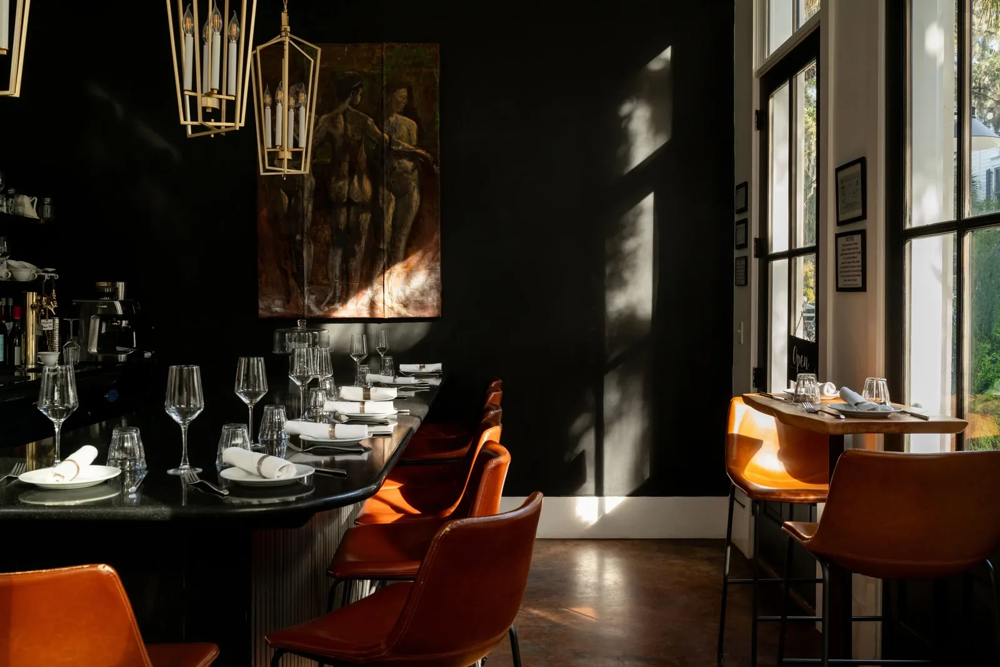
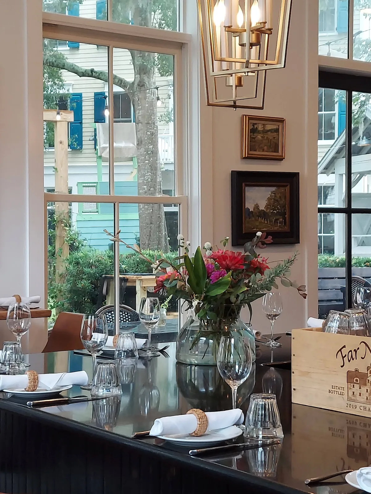
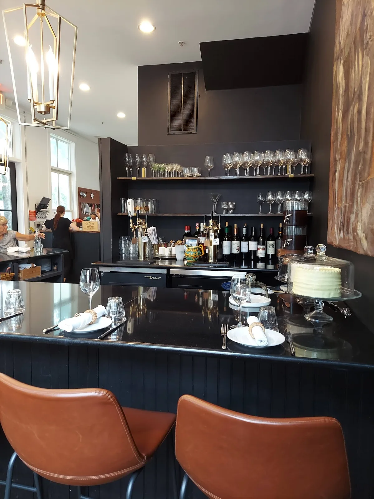
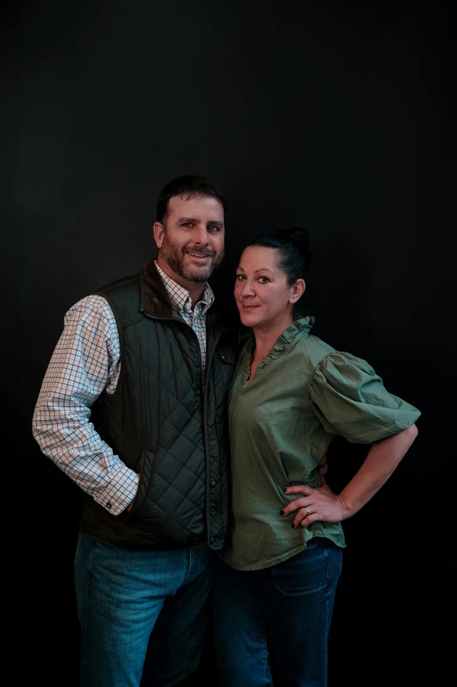
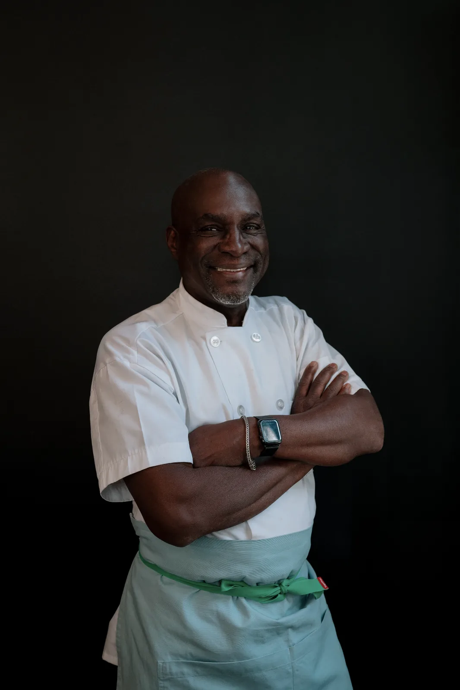
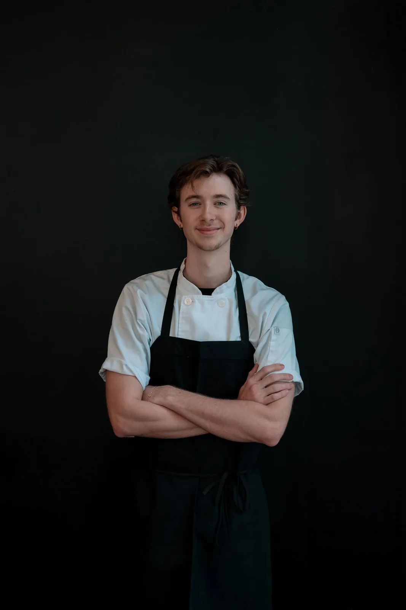
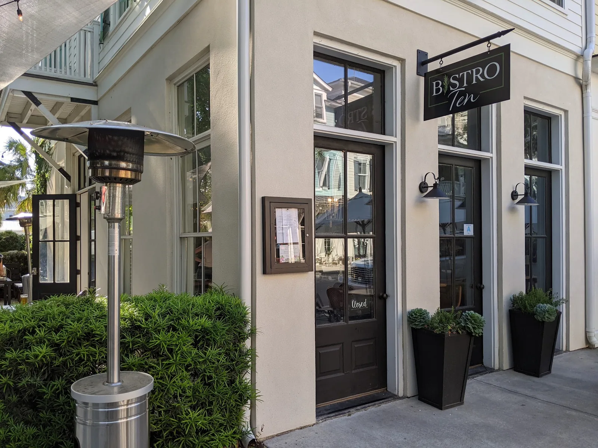

It started with
a wine shop and
too much Christmas.
“We drank a little too much around Christmas and came up with the idea to open a wine and cheese shop in the Marketplace.” That shop — Corks on the Vine — opened at 10-A Market in May 2020. Bistro Ten followed next door in June 2021.
At Bistro Ten, our dedication to quality, environmental sustainability and supporting local producers shapes every dish we serve. Nestled in the heart of Habersham, South Carolina, we’ve created a boutique dining destination that celebrates the best of the Lowcountry.
The space is a nod to the Lowcountry with its interplay of dark tones and natural light, accented by local art and meticulously set tables that promise an intimate dining experience centred on community and garden-fresh ingredients.
Here, guests can savour the freshest seasonal flavours, complemented by an exquisite selection of tapped craft beers and handpicked artisan wines, all sourced with a commitment to health, nutrition and local excellence.
We invite you to join us in this unique experience, whether for a glass of wine, a bite to eat, or both, as we continue to weave new friendships and share in the joy of dining together.
Welcome to our table.


The people at the pass.

Bryan & Melanie McCaffree
Melanie is a Kentucky native and a horse trainer; she and Bryan keep a horse farm outside the village. Bryan keeps the garden beds too — our own posters have billed him as “guest chef and gardener extraordinaire”. They also own Criollo, next door at 9 Market.

Charles Williams
Over 55 years of cooking, starting at fifteen in a bakery. He specialised in sauces and soups before becoming an executive chef, and has worked everything from high-volume banquets to intimate food trucks. His philosophy is simplicity, flavour and the joy of sharing a meal.

Christian Ramsey
Started with a simple summer job and rose quickly. He has a particular love for sautéing, a style shaped by Charles and by his own travels, and he values the creative freedom the kitchen gives him.

A walkable village ten minutes from downtown Beaufort.
Habersham Marketplace is a handful of storefronts under live oaks and Spanish moss, on the water side of Beaufort. Guests routinely tell us they stumbled on it and stayed the afternoon.
Our own corner of it runs to three doors: Corks on the Vine at 10-A, Bistro Ten at 10-B, and Criollo at 9 — Spanish and Latin American small plates in a dark, warm room.
“Chef Charles came over to talk with them about exactly how best to accommodate their needs. Absolutely would recommend this to anyone in the Beaufort area.”Heather Perry
“Aside from the food, the thing that really makes this place is the team that runs it. We ate at the bar and enjoyed chatting with them and watching the place hum.”Christy Wilson
“Matt is a gem — always engaging, interesting, knowledgeable and fun! The entire team is great; we enjoy a wonderful meal every time!”Susan Lewis